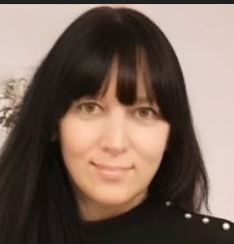
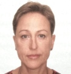

III Московский международный детский кинофестиваль 2024
📅 Даты проведения
15-24 декабря 2024 года
Основные показы: Москва, Сочи, Алагир
🎯 Цели фестиваля
• Поддержка детского кинематографа
• Обмен опытом между юными кинематографистами
• Популяризация киноискусства среди детей и подростков
Программа фестиваля
| Дата | Мероприятие | Место проведения |
|---|---|---|
| 15 декабря | Торжественное открытие. Показ открывающего фильма | Кинотеатр "Каро Атриум", Москва |
| 16-18 декабря | Конкурсные показы игровых фильмов | Москва, различные кинозалы |
| 19 декабря | Мастер-классы для юных кинематографистов | Киноцентр "Октябрь", Москва |
| 20-21 декабря | Показы документальных фильмов | Культурный центр "Алагир", РСО-Алания |
| 22-23 декабря | Детские короткометражные фильмы | ДК "Кудепста", Сочи |
| 24 декабря | Церемония награждения. Гала-концерт | Кинотеатр "Каро Атриум", Москва |
Номинации 2024 года
🎬 Игровое кино
- Лучший полнометражный фильм
- Лучший короткометражный фильм
- Лучшая режиссура
- Лучший сценарий
📹 Документальное кино
- Лучший документальный фильм
- Лучшая операторская работа
- Специальный приз за социальную значимость
🌟 Специальные номинации
- Гран-при фестиваля
- Приз зрительских симпатий
- Приз детского жюри
- Лучший дебют
Организационный комитет 2024

Юлиана Борисова
Президент фестиваля
Основатель и идеолог фестиваля

Жанна Трифонова
Вице-президент
Куратор образовательных программ
Артем Асташкин
Программный директор
Технический руководитель
🏆 Победители III фестиваля 2024
По итогам конкурсного отбора и работы жюри были определены победители III Московского международного детского кинофестиваля 2024 года.
🥇
Лучший короткометражный фильм для детей
«Честное слово»
Режиссер Лолита Наранович
Трогательная история о детской дружбе и важности данного слова
🥈
Лучший документальный фильм
«Я – МАМА»
Режиссер Ольга Ажнакина
Проникновенный документальный фильм о материнстве
🥉
Лучший спортивный фильм для всей семьи
«В потоке трёх стихий»
Режиссер Ирина Гобозашвили
Захватывающая история о преодолении и силе духа
Специальные призы
Специальный приз «СПРАВЕДЛИВОСТЬ»
Киношкола «Крылья» (Москва)
Фильм «Клык»
Режиссер Екатерина Бабченко
Специальный приз «ДОВЕРИЕ»
КИНОшкола 1ый КАДР (Москва)
Фильм «МАМА»
Режиссер Алексей Субботин
Специальный Приз от Детского жюри "Сова"
«В потоке трёх стихий»
Режиссер Ирина Гобозашвили
Фильм получил двойное признание от детского и взрослого жюри
Поздравляем победителей!
Благодарим всех участников за прекрасные работы и ждем на следующем фестивале!
Состав жюри 2024
Председатель жюри:
Василий Бочаров - актер, режиссер
Члены жюри:
• Марина Изосимова - актриса
• Ольга Андреева - продюсер
• Елена Анисимова - директор по развитию международного благотворительного фонда "Подари любовь миру"
• Любовь Шорина - кинорежиссер
Детское жюри:
Андрей Арчаков, Дарья Смирнова, Екатерина Семенычева, Роман Оберемок